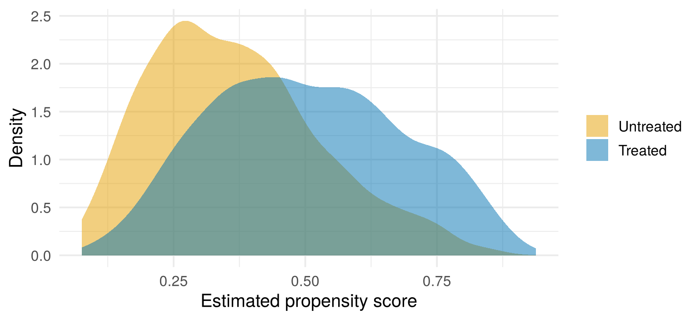

quiz([
{
"q": "A Cox model gives HR = 0.75 for a treatment. What is the percentage change in the hazard?",
"options": [
"25% lower",
"75% lower",
"75% higher",
"33% higher"
],
"answer": 0,
"why": "(0.75 − 1) × 100 = −25%: a 25% lower hazard at any point in time.",
"hints": [
"",
"That would be HR = 0.25.",
"An HR below 1 means a *lower* hazard.",
"That's the reverse comparison, 1/0.75 ≈ 1.33: the untreated vs the treated."
]
},
{
"q": "An observational study defines time zero as diagnosis, and compares patients who later started a drug with those who never did. What is the risk?",
"options": [
"Immortal time bias: the drug group had to survive long enough to start it",
"Informative censoring",
"Competing risks",
"None, as long as the model is adjusted for age"
],
"answer": 0,
"why": "Patients who died before they could start the drug end up in the 'never' group, so the drug looks protective. Time zero should be the same moment for everyone, with group membership known at that moment (Chapter 4).",
"hints": [
"",
"Censoring isn't the problem here. Think about how the groups were formed.",
"There's only one kind of event here.",
"Adjusting for age doesn't fix how the groups were formed."
]
}
])5 Confounding and propensity scores
Warm-up: remember Chapters 3 and 4?
Two quick questions to bring back the key ideas from last time.
5.1 The problem: confounding
In a randomised trial, chance alone decides who gets treated. So treated and untreated patients are similar on average in every way, measured or not, and any difference in outcomes can be put down to the treatment.
In observational data, treatment decisions depend on patient characteristics. Sicker patients may be more likely to get a new drug (confounding by indication), or less likely to get surgery. A confounder is a variable that affects both treatment and outcome. If we ignore confounders, a treatment that helps can look harmful.
5.2 Meet the data: a simulated observational cohort
To learn these methods, we need data where we know the right answer. Then we can check whether each method recovers it. Real observational data can’t do that, so for the rest of the book we use a simulated cohort. It’s made by the function simulate_cohort(), which is in the file simulate_cohort.R. If you haven’t already, download it into your project folder (see Section 3).
The scenario. 2,000 patients are seen in routine care. Some are started on a new preventive treatment and some aren’t. The decision isn’t random: clinicians are more likely to treat patients who seem at higher risk. All patients are then followed for up to 8 years, until death or censoring.
| Variable | Description |
|---|---|
id |
Patient identifier |
age |
Age at baseline (years) |
female |
1 = female, 0 = male |
diabetes |
1 = has diabetes (more common at older ages) |
bmi |
Body mass index (kg/m²) |
smoker |
1 = current smoker |
treated |
1 = received the treatment, 0 = did not |
time |
Follow-up time (years) |
status |
1 = died, 0 = censored |
How the data were generated. There are two steps, and each one uses the same baseline variables:
- Who gets treated. The probability of treatment rises with age, diabetes, BMI and smoking, and is a little lower for women. This is confounding by indication.
- Who dies, and when. Survival times follow a proportional hazards model. Age, diabetes, BMI and smoking also raise the hazard of death, and women have a lower hazard. Treatment reduces the hazard of death by 30%: the true conditional hazard ratio is 0.70. (Conditional means comparing patients who have the same values of the other variables. Chapter 7 explains why that detail matters.)
Censoring comes from staggered entry (follow-up ends 3–8 years after a patient joins) plus random loss to follow-up. It is unrelated to prognosis, so it is non-informative.
So every baseline variable is a confounder: it pushes patients towards treatment and towards death. The treatment truly works, but the treated patients start out sicker.
Show the simulation code
# simulate_cohort.R ----------------------------------------------------------
#
# Simulates an *observational* cohort in which patients choose (or are given)
# a treatment non-randomly, and are then followed up until death or censoring.
#
# Because we simulate the data ourselves we KNOW the truth, so we can check
# whether each method recovers it. This is the best way to learn these tools.
#
# * Older patients, diabetics, people with higher BMI and smokers are MORE
# likely to be treated -> confounding by indication.
# * The same factors also raise the hazard of death.
# * The true conditional hazard ratio for treatment is 0.70 (a 30% lower
# hazard of death, holding the covariates fixed).
#
# Time is measured in years.
simulate_cohort <- function(n = 2000, hr_treat = 0.70, seed = 2026) {
set.seed(seed)
age <- round(pmin(pmax(rnorm(n, 65, 10), 35), 95))
female <- rbinom(n, 1, 0.45)
diabetes <- rbinom(n, 1, plogis(-1.4 + 0.04 * (age - 65)))
bmi <- round(rnorm(n, 28, 4.5), 1)
smoker <- rbinom(n, 1, 0.25)
# --- Treatment assignment (the "propensity score" model) ------------------
lp_treat <- -0.6 + 0.06 * (age - 65) + 1.0 * diabetes + 0.08 * (bmi - 28) -
0.3 * female + 0.4 * smoker
treated <- rbinom(n, 1, plogis(lp_treat))
# --- Survival time: Weibull proportional hazards --------------------------
lp_death <- log(hr_treat) * treated + 0.06 * (age - 65) + 0.6 * diabetes +
0.03 * (bmi - 28) - 0.25 * female + 0.55 * smoker
shape <- 1.2
lambda <- 0.05 # baseline hazard scale (per year)
t_event <- (-log(runif(n)) / (lambda * exp(lp_death)))^(1 / shape)
# --- Censoring: staggered entry (administrative) + random loss to follow-up
t_admin <- runif(n, 3, 8) # study ends 3-8 years after entry
t_dropout <- rexp(n, rate = 0.04)
t_cens <- pmin(t_admin, t_dropout)
time <- pmin(t_event, t_cens)
status <- as.integer(t_event <= t_cens)
data.frame(
id = seq_len(n),
age, female, diabetes, bmi, smoker,
treated,
time = round(time, 3),
status
)
}Load the function, then create the cohort and look at it:
source("simulate_cohort.R") # run this first: it loads simulate_cohort()cohort <- simulate_cohort(n = 2000, seed = 2026)
head(cohort)#> id age female diabetes bmi smoker treated time status
#> 1 1 70 1 0 33.6 0 0 5.542 1
#> 2 2 54 0 0 26.5 0 0 3.243 0
#> 3 3 66 1 0 36.4 0 0 5.553 0
#> 4 4 64 0 0 20.8 0 0 6.189 1
#> 5 5 58 0 1 24.5 1 0 1.482 1
#> 6 6 40 0 0 30.3 0 0 5.723 0# Patients, deaths, and baseline characteristics by treatment group
cohort |>
group_by(treated) |>
summarise(n = n(), deaths = sum(status),
age = mean(age), female = mean(female), diabetes = mean(diabetes),
bmi = mean(bmi), smoker = mean(smoker))#> # A tibble: 2 x 8
#> treated n deaths age female diabetes bmi smoker
#> <int> <int> <int> <dbl> <dbl> <dbl> <dbl> <dbl>
#> 1 0 1151 347 62.9 0.472 0.149 27.4 0.226
#> 2 1 849 282 67.8 0.408 0.335 28.9 0.287(If you prefer, cohort <- read.csv("cohort.csv") loads exactly the same data from the downloadable CSV file.)
849 patients (42%) were treated, and 629 (31%) died during follow-up. The treated patients are on average about 5 years older, and twice as likely to have diabetes (33% vs 15%). They also died slightly more often (33% vs 30%), even though we know the treatment helps.
5.3 The naive analysis gets it wrong
If we ignore the confounders and just compare treated with untreated patients, the Cox model gets the answer badly wrong:
coxph(Surv(time, status) ~ treated, data = cohort) |>
broom::tidy(exponentiate = TRUE, conf.int = TRUE)#> # A tibble: 1 x 7
#> term estimate std.error statistic p.value conf.low conf.high
#> <chr> <dbl> <dbl> <dbl> <dbl> <dbl> <dbl>
#> 1 treated 1.11 0.0802 1.28 0.200 0.947 1.30The naive HR is about 1.11: treatment looks harmful. Let’s see why by comparing the baseline characteristics of the two groups.
To compare groups on variables measured in different units (years, kg/m², yes/no), we use the standardised mean difference (SMD). It is the difference between the group means, divided by the pooled standard deviation (roughly, the average of the two groups’ standard deviations):
\[ \text{SMD} = \frac{\text{mean in treated} - \text{mean in untreated}}{\text{pooled standard deviation}} \]
So an SMD of 0.5 means the groups differ by half a standard deviation, whatever the units. Unlike a p-value, it doesn’t depend on the sample size. The bal.tab() function from the cobalt package calculates SMDs (more on cobalt in Section 6.2):
bal.tab(treated ~ age + female + diabetes + bmi + smoker,
data = cohort, s.d.denom = "pooled", binary = "std",
thresholds = c(m = 0.1))#> Balance Measures
#> Type Diff.Un M.Threshold.Un
#> age Contin. 0.5101 Not Balanced, >0.1
#> female Binary -0.1297 Not Balanced, >0.1
#> diabetes Binary 0.4451 Not Balanced, >0.1
#> bmi Contin. 0.3454 Not Balanced, >0.1
#> smoker Binary 0.1412 Not Balanced, >0.1
#>
#> Balance tally for mean differences
#> count
#> Balanced, <0.1 0
#> Not Balanced, >0.1 5
#>
#> Variable with the greatest mean difference
#> Variable Diff.Un M.Threshold.Un
#> age 0.5101 Not Balanced, >0.1
#>
#> Sample sizes
#> Control Treated
#> All 1151 849An |SMD| above 0.1 is a common rule of thumb for meaningful imbalance. Age (SMD 0.51) and diabetes (0.45) are strongly imbalanced, and BMI, smoking and sex are imbalanced too.
5.4 Why not just adjust in a Cox model?
You already know one way to deal with confounders: put them in the Cox model, as in Chapter 3. That is a perfectly good approach, and Chapter 7 compares it with matching. So why learn another one? Propensity score methods have four practical advantages:
- Design before outcomes. Matching and checking balance use only the baseline variables and who was treated. You settle the comparison groups before seeing any survival results, as you would when designing a trial, so you can’t (even unconsciously) pick the analysis that gives the answer you hoped for.
- You can see whether the groups are comparable. Balance tables and overlap plots show exactly where treated and untreated patients don’t resemble each other. A Cox model will compare them anyway, without warning, by extrapolating from patients who aren’t really comparable.
- Many confounders, few events. A Cox model needs roughly 10–20 deaths for each coefficient (Chapter 3). The propensity score model’s outcome is treatment, which is usually far more common than death, so it can include many confounders. The survival model after matching then needs only one coefficient, for treatment.
- A clear target. Matching estimates the effect in a well-defined group of patients, those who were treated (see the box on estimands later in this chapter).
They have costs too. Matching usually discards some patients, which costs precision. And neither approach can deal with confounders that weren’t measured. In practice the two are often used together, as you’ll see in Chapter 7.
5.5 The propensity score
5.5.1 The idea
We have five confounders. To compare like with like, we could try to match every treated patient with an untreated patient of the same age, sex, diabetes status, BMI and smoking status. With only five variables that’s already hard. Exact matches on age and BMI are rare. With twenty variables it’s impossible.
The propensity score (often shortened to PS) gets around this by combining all the confounders into a single number: each patient’s probability of being treated, given their covariates:
\[ e(x) = \Pr(\text{Treated} = 1 \mid X = x) \]
A patient with a propensity score of 0.8 had characteristics that made treatment very likely. A patient with a score of 0.1 was unlikely to be treated. Whether each patient was actually treated is a separate question.
Rosenbaum and Rubin (1983) showed that the propensity score is a balancing score. Among patients with the same propensity score, the measured covariates have the same distribution in the treated and untreated groups. Consider two patients who both had a 60% chance of treatment. One got it and one didn’t. They are comparable as far as the measured covariates are concerned. So instead of matching on five (or fifty) variables at once, we can match on one number.
ImportantThe big assumption: no unmeasured confounding
Propensity scores can only balance the confounders you measured and included. Unlike randomisation, they do nothing about unmeasured ones (frailty, disease severity not in the records, and so on). The app later in this chapter lets you see this happen. Choosing covariates needs subject-matter knowledge, not just statistics.
5.5.2 Worked example: estimating the propensity score
We don’t know the true probability of treatment, so we estimate it. The usual method is a logistic regression with treatment as the outcome and the confounders as predictors. The survival outcome plays no part here: this model only describes who gets treated.
ps_model <- glm(treated ~ age + female + diabetes + bmi + smoker,
data = cohort, family = binomial)
# Odds ratios: how each characteristic changes the odds of being treated
broom::tidy(ps_model, exponentiate = TRUE)#> # A tibble: 6 x 5
#> term estimate std.error statistic p.value
#> <chr> <dbl> <dbl> <dbl> <dbl>
#> 1 (Intercept) 0.00149 0.494 -13.2 1.20e-39
#> 2 age 1.05 0.00531 9.99 1.64e-23
#> 3 female 0.735 0.0985 -3.13 1.74e- 3
#> 4 diabetes 2.71 0.117 8.55 1.22e-17
#> 5 bmi 1.09 0.0110 8.18 2.93e-16
#> 6 smoker 1.53 0.112 3.82 1.31e- 4The estimate column holds the odds ratios (exponentiate = TRUE converts the coefficients to odds ratios, as it did for hazard ratios in Chapter 3). They show the confounding by indication we built in. Each extra year of age raises the odds of treatment by about 5%, and diabetes nearly triples them. Each patient’s fitted probability from this model is their estimated propensity score:
cohort$ps <- fitted(ps_model) # propensity score (a probability)
cohort$logit_ps <- qlogis(cohort$ps) # the same score on the log-odds scale
cohort |>
select(id, age, female, diabetes, bmi, smoker, treated, ps) |>
head()#> id age female diabetes bmi smoker treated ps
#> 1 1 70 1 0 33.6 0 0 0.4792373
#> 2 2 54 0 0 26.5 0 0 0.2205669
#> 3 3 66 1 0 36.4 0 0 0.4890299
#> 4 4 64 0 0 20.8 0 0 0.2238142
#> 5 5 58 0 1 24.5 1 0 0.5487230
#> 6 6 40 0 0 30.3 0 0 0.1591873A useful first check is how much the two groups’ scores overlap:
ggplot(cohort, aes(ps, fill = factor(treated, labels = c("Untreated", "Treated")))) +
geom_density(alpha = 0.5, colour = NA) +
scale_fill_manual(values = c("#E69F00", "#0072B2")) +
labs(x = "Estimated propensity score", y = "Density", fill = NULL) +
theme_minimal(base_size = 13)
Treated patients tend to have higher scores, as expected. But the distributions overlap over most of the range, so most treated patients should have untreated patients with similar scores. Where there is no overlap (here, at the very top end), comparable patients don’t exist, and no method can conjure them up.
5.5.3 Seeing the balancing property
Here’s a direct way to see that the score balances the covariates. Split the patients into five equal-sized groups (quintiles) by propensity score. Then compare treated and untreated patients within each group:
cohort$ps_quintile <- ntile(cohort$ps, 5) # 1 = lowest fifth of scores, 5 = highest
cohort |>
group_by(ps_quintile, treated) |>
summarise(n = n(), mean_age = mean(age), prop_diabetes = mean(diabetes))#> # A tibble: 10 x 5
#> # Groups: ps_quintile [5]
#> ps_quintile treated n mean_age prop_diabetes
#> <int> <int> <int> <dbl> <dbl>
#> 1 1 0 324 55.1 0
#> 2 1 1 76 55.5 0.0526
#> 3 2 0 266 61.9 0.0301
#> 4 2 1 134 62.0 0.0448
#> 5 3 0 254 65.1 0.154
#> 6 3 1 146 66.0 0.0959
#> 7 4 0 191 69.1 0.241
#> 8 4 1 209 68.5 0.268
#> 9 5 0 116 72.2 0.672
#> 10 5 1 284 74.2 0.718Read the table in pairs of rows. Each quintile has one row for untreated patients (treated = 0) and one for treated patients (treated = 1).
Overall, treated patients were about 5 years older (67.8 vs 62.9) and twice as likely to have diabetes. Within each quintile, the differences mostly disappear. In the middle quintile, for example, both groups are aged about 65–66. Each quintile still covers a fairly wide range of scores, so the balance isn’t perfect. Matching goes further, by pairing patients whose scores are very close.
5.5.4 Practice: fill in the blanks
This is a live exercise: edit the code, click Run Code, and your answer is checked automatically. See Section 1.4.1 if you haven’t used one before.
Estimate the propensity scores yourself. The simulated cohort is already loaded. Replace each ______, then click Run Code.
NoteHint 1
Logistic regression is a glm() with family = binomial. The fitted probabilities come from fitted().
NoteHint 2
tapply(x, group, mean) calculates the mean of x in each group.
TipSolution
ps_model <- glm(treated ~ age + female + diabetes + bmi + smoker,
data = cohort, family = binomial)
cohort$ps <- fitted(ps_model)
tapply(cohort$ps, cohort$treated, mean)The average propensity score is about 0.37 in untreated patients and 0.50 in treated patients. Treated patients had characteristics that made treatment more likely. That is the confounding by indication the propensity score captures.
5.5.5 Which covariates should go in?
- Include pre-treatment variables that affect the outcome, especially if they also affect treatment (true confounders).
- Never include variables measured after treatment that could be affected by it (mediators), or the outcome itself.
- Variables that predict treatment but not outcome (instruments) don’t help, and they increase variance.
- Don’t choose covariates by p-values. Draw a causal diagram (DAG). The website dagitty.net is useful for this.
- The aim of the PS model is balance, not prediction. A model that predicts treatment very well is not necessarily a better PS model.
5.6 Matching on the propensity score
5.6.1 Nearest-neighbour matching, by hand
The simplest and most common approach is 1:1 nearest-neighbour matching:
- Take a treated patient.
- Find the untreated patient whose propensity score is closest. In matching, untreated patients are usually called controls.
- Pair them, and remove that untreated patient from the pool, so that each control is used only once (matching without replacement).
- Repeat for the next treated patient.
Distances are usually measured on the logit (log-odds) scale, \(\log\{e/(1-e)\}\), not on the probability scale. On the probability scale, scores are squashed together near 0 and 1, so a difference of 0.02 means much more at \(e = 0.95\) than at \(e = 0.5\). The logit scale spreads them out evenly.
Let’s match four treated patients by hand. To keep it simple, we look for each patient’s nearest control independently, ignoring step 3:
Show the code for this example
controls <- filter(cohort, treated == 0)
nearest_control <- function(lp) {
i <- which.min(abs(controls$logit_ps - lp))
tibble(control_id = controls$id[i], control_age = controls$age[i],
control_diab = controls$diabetes[i], control_ps = controls$ps[i],
distance = abs(controls$logit_ps[i] - lp))
}
# Three ordinary treated patients, plus the treated patient with the highest score
example <- cohort |>
filter(treated == 1) |>
slice(c(1, 2, 3, which.max(ps)))
bind_cols(
example |> select(id, age, diabetes, ps),
bind_rows(lapply(example$logit_ps, nearest_control))
) |>
mutate(across(c(ps, control_ps), \(x) round(x, 3)), distance = round(distance, 3))#> id age diabetes ps control_id control_age control_diab control_ps
#> 1 8 55 1 0.544 1005 76 1 0.545
#> 2 9 66 0 0.441 1486 67 0 0.440
#> 3 13 63 1 0.533 1181 61 1 0.533
#> 4 585 93 1 0.938 946 71 1 0.863
#> distance
#> 1 0.005
#> 2 0.001
#> 3 0.001
#> 4 0.867Each row is one treated patient (id, age, diabetes, ps), next to the untreated patient with the closest score (control_…). distance is how far apart their scores are on the logit scale.
The first three treated patients each find a control with an almost identical score, and similar characteristics. The last patient is different. Their score is about 0.94, and the closest untreated patient scores only about 0.86, a long way off on the logit scale. Is that pair really comparable? This is what a caliper is for.
5.6.2 The caliper
A caliper is the maximum distance allowed between the scores of two matched patients. If a treated patient has no control within the caliper, they are left unmatched and dropped from the analysis, rather than being paired with a poor match.
The usual choice is 0.2 standard deviations of the logit propensity score (Austin 2011b):
caliper <- 0.2 * sd(cohort$logit_ps)
caliper#> [1] 0.1692203In this cohort the caliper is about 0.17 on the logit scale. The first three pairs above are well inside it. The fourth (distance ≈ 0.88) is far outside it, so that patient would be dropped.
Calipers involve a trade-off:
| Wider caliper (or none) | Narrower caliper | |
|---|---|---|
| Balance | Worse: poor matches allowed | Better: only close matches |
| Patients kept | More | Fewer, as more treated patients are dropped |
| Who the result applies to | Close to all treated patients | Only the treated patients who have comparable controls |
That last row matters. Dropped patients are usually the ones with the most extreme scores, the most “obviously treat” cases. After matching, the estimate applies to the remaining, more typical treated patients. Always report how many were dropped.
NoteEstimands: who is the effect for?
Matching each treated patient to a control builds a sample that looks like the treated group. So it estimates the:
- ATT: average effect of treatment in the treated. “For the kind of patients who get this drug, what did it do?”
An alternative is the:
- ATE: average effect if everyone in the population were treated vs if no-one were. Weighting methods (IPTW) or full matching can target the ATE (see Chapter 9).
With a caliper, the estimate applies to the matched treated patients.
5.7 Interactive app: matching under the microscope
We simulate patients with two confounders, age and severity. Each affects both the chance of treatment and a continuous outcome score. You control how strong the confounding is, the true treatment effect and the matching caliper (Section 5.6.2). You can also leave severity out of the propensity model, to see what an unmeasured confounder does.
TipThings to try
For each one, predict first: decide what you expect to see, then pick the scenario and check. Committing to a prediction, even a wrong one, makes the result stick.
- No confounding. Predict: if age and severity affect who gets treated but not the outcome, will the naive estimate be biased? Then pick No confounding of the outcome. Then try No confounding of treatment.
- Strong confounding. Predict: how wrong could the naive estimate get? Could it even have the wrong sign? Then pick Strong confounding. Look at the overlap of the histograms and the number of treated patients dropped.
- Caliper. Predict: what happens to balance and to the number of pairs without a caliper, and with a very tight one? Then pick No caliper, then Tight caliper (0.05).
- Unmeasured confounding. Predict: if severity isn’t recorded, so it can’t go into the propensity score model, will age still balance? Will the estimate be right? Then pick Severity unmeasured.
Quick quiz
Choose an answer to each question. You’ll get instant feedback and can change your answer as often as you like.
5.8 Summary
Answering the question. The treated patients were sicker to begin with: older, more often diabetic, with higher BMI and more often smokers. Their average propensity score was 0.50, compared with 0.37 for untreated patients. Matching on the propensity score can create comparable groups. Chapter 6 does the matching in R and checks that it worked, and Chapter 7 then compares survival.
5.9 Further reading
All of these are free to read online unless marked otherwise. The whole book’s reading list, grouped by topic, is in Appendix C.
- Haukoos and Lewis (2015): Start here. A two-page, plain-language overview of what propensity scores are and their limitations. (May need institutional access.)
- Austin (2011a): The standard introduction to propensity score methods: matching, weighting and stratification, and how to check balance.